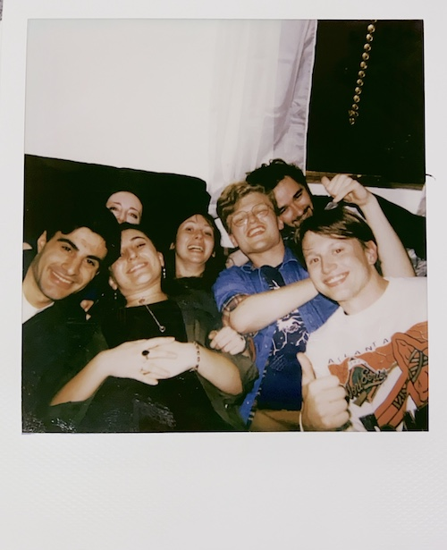
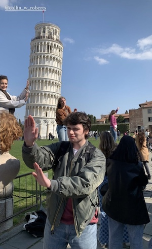

This picture was taken at my 20th birthday party this year! Most of my friends are involved in WUOG and film club at UGA. These people mean a whole lot to me; they're a bunch of nerds in the best way possible. A couple of them are graduating after this semester which is sad, but I am proud of them for finishing college! Here are their names organized by their year in college:
| Sophomore | Junior | Senior |
| Olivia | Isaac | Reed |
| Sam | Jim | Chris |
Below this text is a funny picture of another good friend of mine named Collin. He is studying abroad in Italy this semester, and we miss him dearly! He will also be graduating this year.
 Fun fact: Collin wants to become a history teacher in the future. He also starred in a student made film called Uncle Honker alongside my friends Chris, Jim, and Olivia.
Finally, my friend Reed is an incredible folk musician. Here is a link to her music on bandcamp: Reed's Music